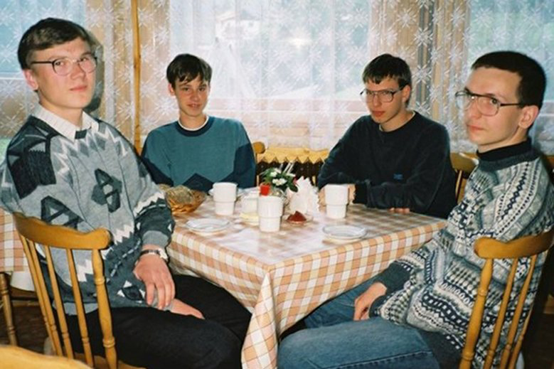

Co oznacza skrót IP?
A. Information Protocol
B. Internet Protocol
C. Informacja Podstawowa
D. Informatyka Przedszkolna
Co jest główną częścią procesora?
A. CPU
B. RAM
C. GUI
D. Monokryształ krzemu, na który naniesiono techniką fotolitografii szereg warstw półprzewodnikowych, tworzących, w zależności od zastosowania, sieć od kilku tysięcy do kilku miliardów tranzystorów
Do czego NIE da się wykorzystać karty graficznej?
A. Kopanie kryptowalut
B. Gotowanie wody
C. Naprawianie złamanej nogi krzesła
D. Ogrzewanie pokoju
Kim jest programista?
A. Osoba obsługująca wagę w skali (pro)gramy
B. Osoba robiąca błędy w aplikacjach
C. Profesjonalista w używaniu gramów
D. Osoba której nie chciało się wymyślać czwartej odpowiedzi
Któro z poniższych symbolizuje OK?
A. 0360bca6a9fd5111a99aad14376dc8d4
B. SkQ=
C. 01001111 01001011
D. 2289b7f0
Która gra jest najbardziej znaną grą MMO ostatnich 15 lat?
A. World of Warcraft
B. World of Tanks
C. World of Warships
D. World of Warplanes
Czym są sztuczne sieci neuronowe?
A. Siatka do łapania motyli
B. Podstawowa technika tworzenia sztucznej inteligencji
C. Polimerowy materiał używany do ocieplania ubrań zimą
D. Pajęczyny z neuronów
Do której części internetu zaliczane są twoje maile?
A. Surface Web
B. Deep Web
C. Dark Web
D. LAN
Na jakie najmniejsze jednostki dzieli się bitcoin?
A. Litecoin
B. Dogecoin
C. Ethereum
D. Satoshi
W oparciu o jaką technologię działa komunikacja między urządzeniami inteligentnego domu?
A. Wi-Fi
B. IrDA
C. NFC
D. GPS
Kim był Steve Jobs?
A. Buddyjskim mnichem
B. Twórcą silnika benzynowego
C. Jednym z założycieli Apple Computers Inc.
D. Projektantem Wielkiego Zderzacza Hadronów

W klasie G jest miejsc wiele
Zawsze zostaje dziennikarska :/